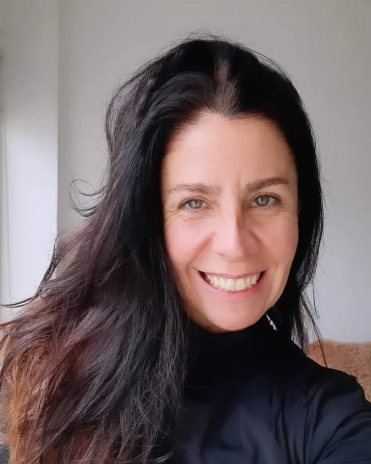

Un espacio para mirar lo que quedó pendiente en nuestra historia familiar, liberarlo y recuperar nuestro propio lugar.

Las Constelaciones Familiares son espacios donde nos encontramos a ver, desde una mirada espiritual, aquello que quedó pendiente o interrumpido en nosotros o en alguna generación anterior, y que hoy no nos deja avanzar hacia nuestra propia vida.
En nuestro sistema familiar se guardan historias y memorias de mucho dolor que no conocemos, pero de las que somos parte sin saberlo.
Por lealtad a nuestros ancestros nos implicamos en sus tramas. El primer paso es ver aquello en lo que estamos enredados.
Al permitir que salga a la luz, lo que no estaba resuelto se libera y deja de pesar.
Tomar la fuerza necesaria para estar en tu propio lugar, y recuperar la paz y el alivio en cada miembro del clan.
“Este trabajo en el fondo es muy sencillo: se trata de unir lo que estaba separado.”Bert Hellinger
Julieta acompaña encuentros de Constelaciones Familiares para que cada persona pueda mirar su historia con amor y tomar la fuerza de su propio lugar.
La información y las inscripciones las gestiona directamente Julieta. Consultas por mensaje directo en Instagram.